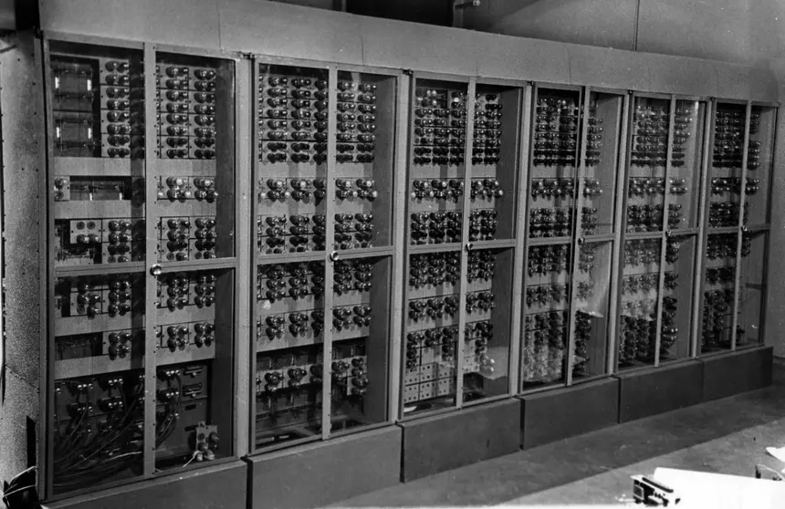
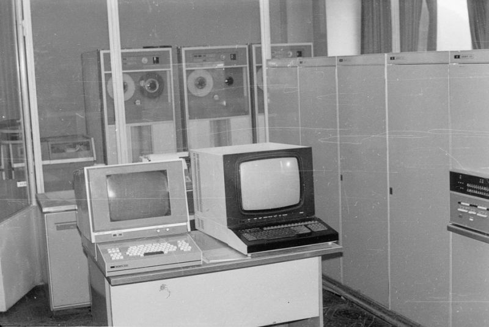
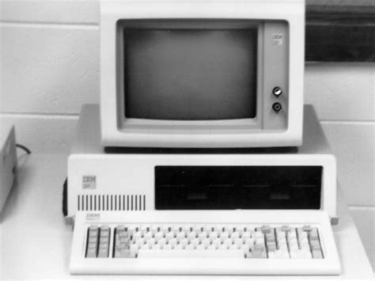

Первые электронные вычислительные машины появились в середине XX века.
Тег span используется для выделения части текста внутри строки.
ЭВМ — это электронная вычислительная машина.
Важно: первые ЭВМ занимали целые помещения.
Курсивный текст и логически выделенный текст.
Устаревшая информация
Подчёркнутый текст
Формула воды: H2O
Степень числа: 23 = 8
Мелкий текст для примечаний
Выделенный важный фрагмент
Первая строка
Вторая строка
Пример кода:
<h1>История ЭВМ</h1>
Описание поколений электронных вычислительных машин.



